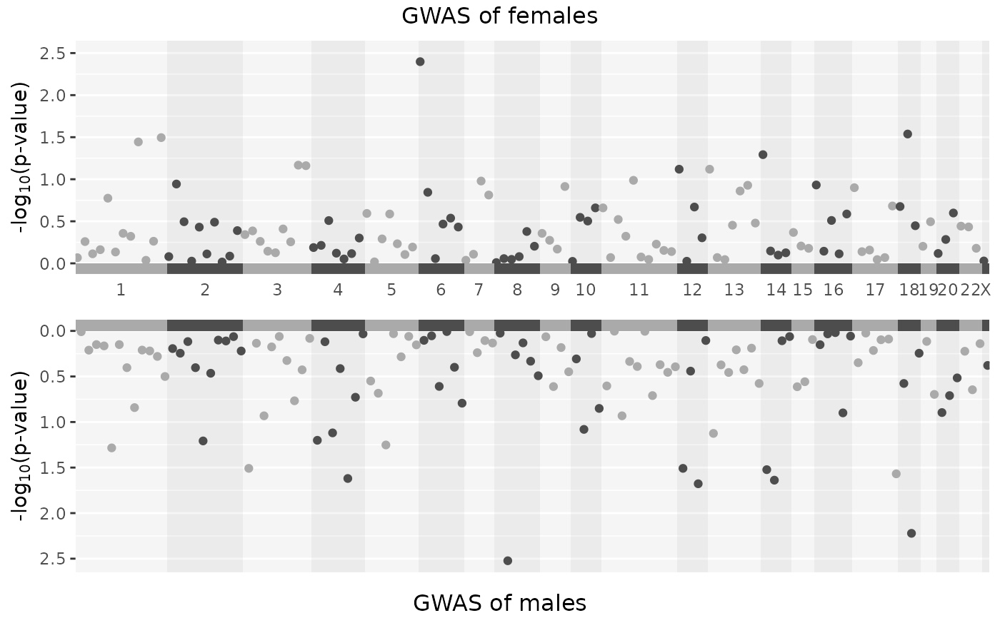
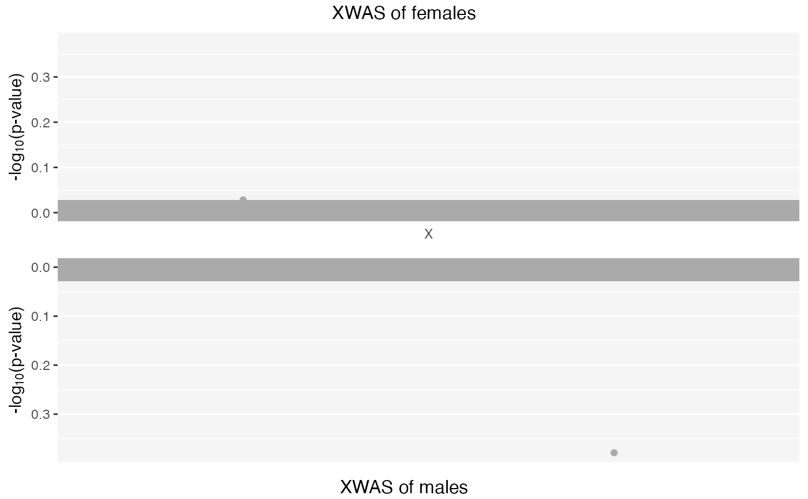
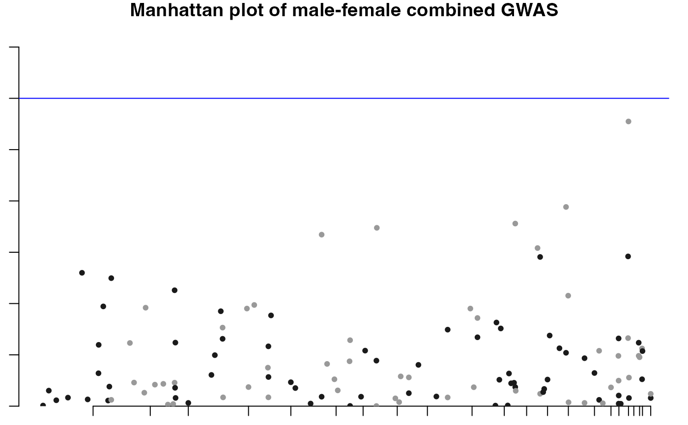
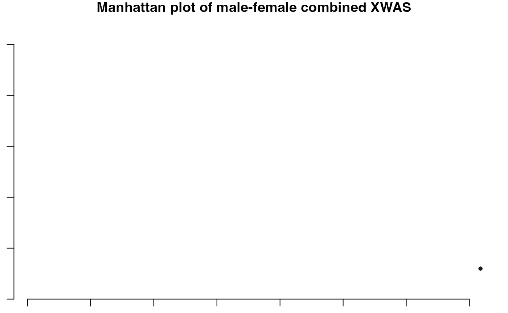
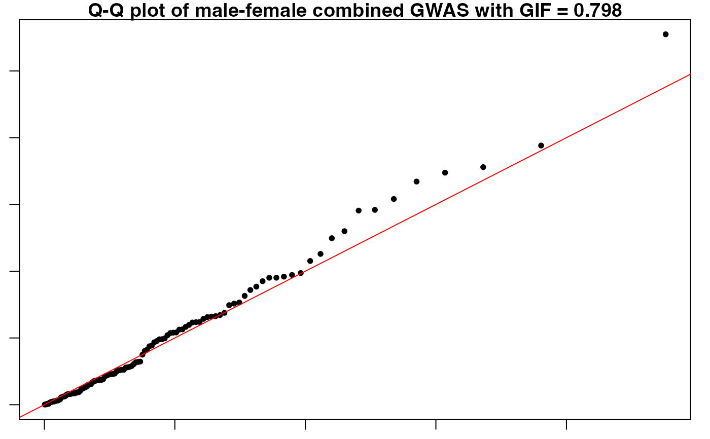
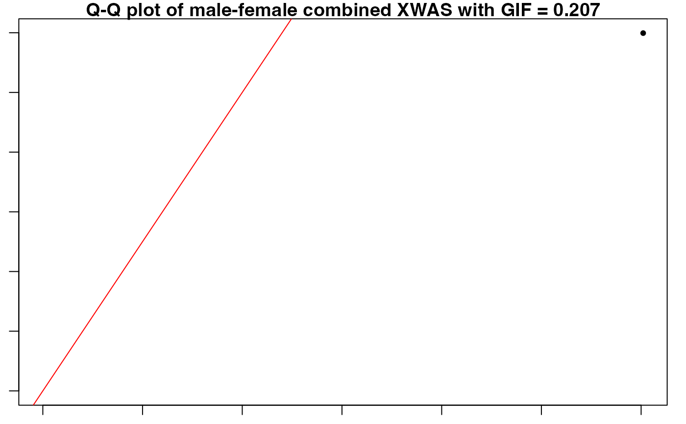

This function combines the p-values of two separate GWAS summary statistics (for instance male and female populations), merges them, and then applies various statistical methods (like Stouffer's method, Fisher's method) to integrate the p-values. It also includes functionality for generating plots like Manhattan plots and Q-Q plots.
Usage
PvalComb(
SumstatMale,
SumstatFemale,
combtest,
MF.p.corr = "none",
MF.zero.sub = 1e-05,
MF.na.rm = TRUE,
MF.mc.cores = 1,
B = 1000,
plot.jpeg = TRUE,
plotname = "GXwas.plot",
PlotDir = tempdir(),
snp_pval,
annotateTopSnp = FALSE,
suggestiveline = 5,
genomewideline = 7.3,
ncores = 0
)Arguments
- SumstatMale
R dataframe object of summary statistics of male GWAS with five mandatory columns:
CHR(numeric chromosome code)SNP(variant id)A1(allele)POS(base-pair position)P(p-value).
Other columns may present.
- SumstatFemale
R dataframe object of summary statistics of female GWAS with five mandatory columns:
SNPA1TESTPOSP
Other columns may present.
- combtest
Character vector specifying method for combining p-values for stratified GWAS models. Choices are “stouffer.method”, "fisher.method" and "fisher.method.perm". For fisher.method the function for combining p-values uses a statistic, \(S = -2 ∑^k /log p\), which follows a \(χ^2\) distribution with 2k degrees of freedom (Fisher 1925) . For fisher.method.perm, using p-values from stratified tests, the summary statistic for combining p-values is \(S = -2 ∑ /log p\). A p-value for this statistic can be derived by randomly generating summary statistics (Rhodes 2002) . Therefore, a p-value is randomly sampled from each contributing study, and a random statistic is calculated. The fraction of random statistics greater or equal to S then gives the final p-value.
- MF.p.corr
Character vector specifying method for correcting the summary p-values for FMfcomb and FMscomb models. Choices are "bonferroni", "BH" and "none" for Bonferroni, Benjamini-Hochberg and none, respectively. The default is "none".
- MF.zero.sub
Small numeric value for substituting p-values of 0 in GWAS summary statistics. The default is 0.00001. As \(log(0)\) results in Inf this replaces p-values of 0 by default with a small float.
- MF.na.rm
Boolean value,
TRUEorFALSEfor removing p-values of NA in stratified GWAS summary satistics in case of using Fisher’s and Stouffer’s methods. The default isTRUE.- MF.mc.cores
Number of cores used for fisher.method.perm for combining p-values. The default is 1.
- B
Integer value specifying the number of permutation in case of using fisher.method.perm method. The default is 10000.
- plot.jpeg
Boolean value,
TRUEorFALSEfor saving the plots in .jpeg file. The default isTRUE.- plotname
A character string specifying the prefix of the file for plots. This file will be saved in DataDir. The default is "GXwas.plot".
- PlotDir
A character string specifying the path of the directory where the plots will be saved. The default is
tempdir().- snp_pval
Numeric value as p-value threshold for annotation. SNPs below this p-value will be annotated on the plot. The default is 1e-08.
- annotateTopSnp
Boolean value,
TRUEorFALSE.IfTRUE, it only annotates the top hit on each chromosome that is below the snp_pval threshold. The default isFALSE.- suggestiveline
Numeric value for suggestive cut-off line in GWAS manhattan plot. The default is 5 (for p-value 1e-05).
- genomewideline
Numeric value for genome-wide significant cut-off line in GWAS manhattan plot. The default is 7.3 (for p-value 5e-08).
- ncores
Integer value, specifying the number of cores for parallel processing. The default is 0 (no parallel computation).
Value
A dataframe with GWAS summary statistics (with XWAS for X-chromosomal variants) along with Manhattan and Q-Q plots.
References
Fisher RA (1925).
Statistical Methods for Research Workers.
Oliver and Boyd, Edinburgh.
Rhodes DR (2002).
“Meta-analysis of microarrays: interstudy validation of gene expression profiles reveals pathway dysregulation in prostate cancer.”
Cancer Research, 62(15), 4427–4433.
Examples
data("Mfile", package = "GXwasR")
data("Ffile", package = "GXwasR")
SumstatMale <- Mfile
colnames(SumstatMale)[3] <- "POS"
SumstatFemale <- Ffile
colnames(SumstatFemale)[3] <- "POS"
PvalComb_Result <- PvalComb(
SumstatMale = SumstatMale, SumstatFemale = SumstatFemale,
combtest = "fisher.method", MF.mc.cores = 1, snp_pval = 0.001, plot.jpeg = FALSE,
suggestiveline = 3, genomewideline = 5.69897, ncores = 1
)
#> ℹ Saving plot to /tmp/RtmpyJFifX/Stratified_GWAS.png

#> ℹ Saving plot to /tmp/RtmpyJFifX/Stratified_XWAS.png




